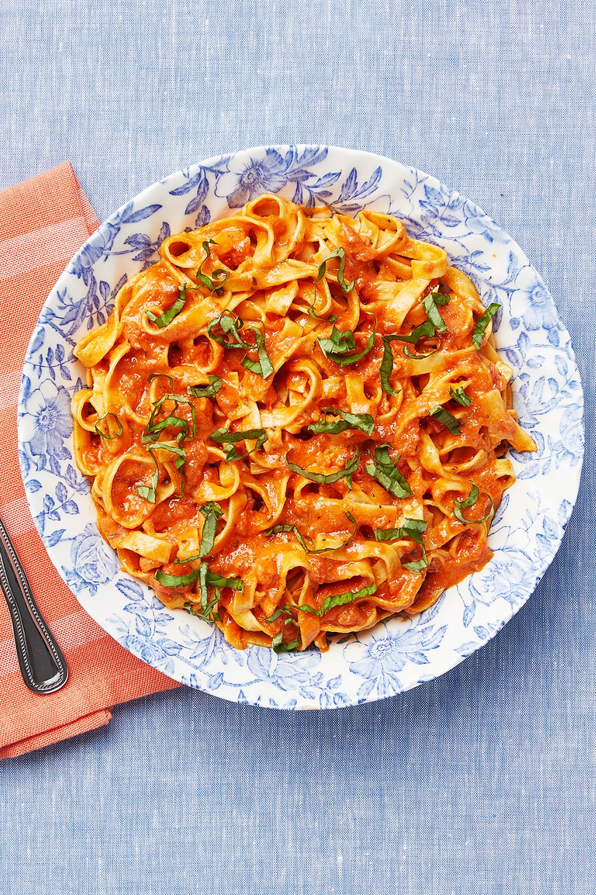

Pasta with tomato sauce

Description
Ingredients
- Pasta of your choice
- Garlic, minced
- Onion, chopped
- Canned tomatoes
- Tomato paste
- Dried basil
- Dried oregano
- Salt and pepper
- Olive oil
- Grated Parmesan cheese
Steps
- Cook the pasta according to package instructions and set aside.
- In a large skillet over medium-high heat, sauté the garlic and onion in olive oil until the onion is translucent.
- Add the canned tomatoes, tomato paste, basil, oregano, salt, and pepper to the skillet. Stir to combine and bring to a simmer. Reduce heat to low and let the sauce simmer for 10-15 minutes.
- Add the cooked pasta to the skillet and toss to coat with the sauce.
- Serve with grated Parmesan cheese.